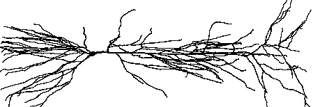

Inhomogeneous Channel Distribution
Physical System
Conceptual Model
The conceptual model is a much simplified stylized representation of a pyramidal cell with active soma and axon, passive basilar dendrites, and weakly excitable apical dendrites.

Computational Model
Here is the complete specification of the computational model:
Geometry
Section |
L (um) |
diam (um) |
Biophysics |
|---|---|---|---|
soma |
20 |
20 |
hh |
ap[0] |
400 |
2 |
hh* |
ap[1] |
300 |
1 |
hh* |
ap[2] |
500 |
1 |
hh* |
bas |
200 |
3 |
pas |
axon |
800 |
1 |
hh |
* – gnabar_hh, gkbar_hh, and gl_hh in the apical dendrites decrease linearly with path distance from the soma. Density is 100% at the origin of the tree, and falls to 0% at the most distant termination.
To ensure that resting potential is -65 mV throughout the cell, e_pas in the basilar dendrite is -65 mV.
Other parameters: cm = 1 uf/cm^2, Ra = 160 ohm cm, nseg governed by d_lambda = 0.1.
The exercise
Use the GUI to implement and test a model cell with the anatomical and biophysical properties described above.
Start by using the CellBuilder to make a “version 0 model” that has uniform membrane properties in the apical dendrites (hh mechanism with default conductance densities).
Verify that the anatomical and biophysical properties of the model are correct–especially the channel distributions.
Test the model with a virtual lab rig that includes a RunControl, IClamp at the soma, and plots of v vs. t and v vs. distance. Employ a modular strategy so that you can reuse this experimental rig with a different model cell.
Next, copy the “version 0 model” CellBuilder and modify this copy to implement version 1: a model in which gnabar_hh, gkbar_hh, and gl_hh in the apical tree decrease linearly with distance from the origin of the apical tree, as described above.
Verify the channel distributions, and test this new model with the same rig you used for version 0.
Pick any anatomically detailed morphology you like, import it into NEURON, and implement a model with biophysical channel densities similar to those described above.
Hints
Before doing anything, think about the problem. In particular, determine the formulas that will govern channel densities in the apical tree.
In each apical section, gnabar_hh at any point x in that section will be
gnabar_hh = gnabar_max * (1 - distance/max_distance)
where
distance = distance from origin of the apical tree to x
and
max_distance = distance from {origin of the apical tree} to {the most remote dendritic termination in the apical tree}.
The formulas for
gk_hhandgl_hhare similar.distance/max_distance is “normalized distance into the apical tree from its origin.” So the distance metric p should be 0 at the origin of the apical tree, and 1 at the end of the most remote dendritic termination in the apical tree.
Hints for using the CellBuilder to specify an inhomogeneous channel distribution